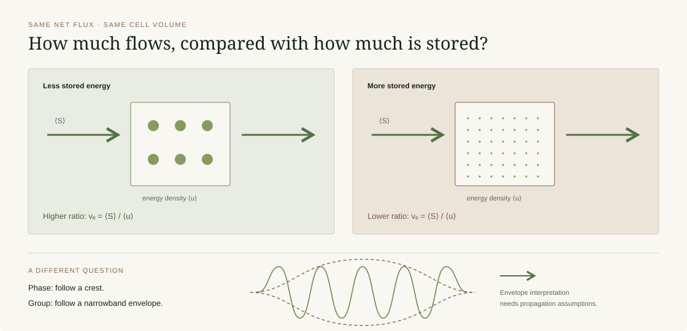
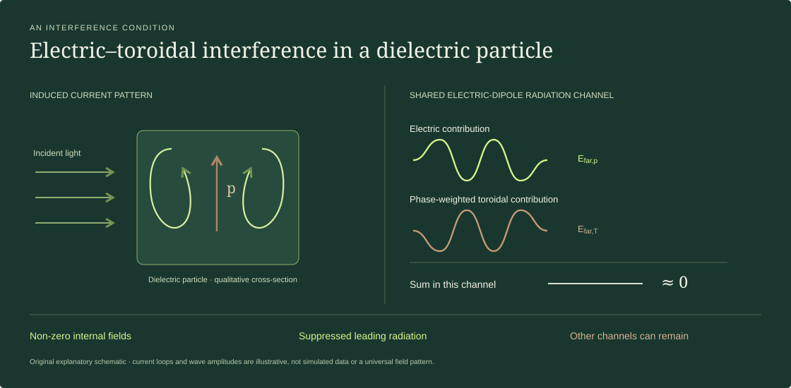

In a dispersive material, “the speed of light” needs a definition. My thin-film study asks how much electromagnetic energy flows relative to the energy stored locally.
Follow a pulse through an ideal dielectric.
Bulk forward-wave speed
Direct-path excess delay
Ideal non-dispersive, lossless air–film–air reference: 480 nm slab, 400 nm carrier wavelength. The bulk forward-wave speed is c/n; local energy flow inside the film also includes interference and reflections. This reference illustrates the transparent limit; the TiO₂ film discussed below is dispersive.Energy flow and stored energy: explanatory diagram

FIGURE 01
Energy flow and stored energy are different quantities. The comparison is schematic: equal volume and equal net flux, with different stored energy. It is not a calculation for a particular material.On small screens, scroll the diagram horizontally ↔
Three velocities, three questions
Phase velocity vp = ω / k
How fast does a point of constant phase move? A moving crest does not, by itself, tell us the speed of an energy-carrying pulse.
Group velocity vg = dω / dk
How does a narrowband wave packet’s envelope move? This is useful when the envelope remains well defined and reshaping and loss are sufficiently small.
Energy velocity ve = ⟨S⟩ / ⟨u⟩
What is the cycle-averaged energy flux per unit of stored energy density? The Poynting vector ⟨S⟩ gives flow in W/m²; ⟨u⟩ gives energy density in J/m³. Their ratio has units of m/s and a direction.
Why use energy velocity here?
The TiO₂ films in this work operate close to their absorption edge in the UV-A. Their refractive index changes with wavelength, and their extinction coefficient is small but finite. A slope extracted from the dispersion relation alone is therefore not a complete description of transport in the finite film.
In an absorbing band, a pulse can change shape as it propagates. Its peak need not follow the flow of energy. An unusual, negative or formally superluminal group velocity does not imply that energy or information travels faster than c.
The useful question for this design study was local: how do the computed fields, measured optical constants and recoverable stored energy combine at the wavelengths of interest?
Use ellipsometry-derived n(λ) and κ(λ) to describe the complex permittivity of the approximately 98 nm, ozone-grown TiO₂ film.
02
Solve for the fields
Run linear FDTD in MEEP and extract steady-state fields at each frequency for a 100 nm slab model. At each selected frequency, reproduce the measured complex permittivity.
03
Compare flow with stored energy
Evaluate the Poynting vector from the fields and a Brillouin-type energy density using the separately measured frequency dependence of the permittivity. Inspect local maps and the averaging region together.
WHAT THE STUDY SUPPORTS
A design indicator, with a defined scope.
The thesis reports normalized energy-velocity estimates of approximately 0.18–0.21c at 380–400 nm for the ozone-grown film model. These are estimates under the study’s material, geometry and averaging choices. They do not mean the light has stopped.
A reduced flux-to-stored-energy ratio helps identify conditions worth investigating for stronger light–matter interaction. It does not alone predict third-harmonic conversion efficiency or establish an intrinsic nonlinear coefficient χ(3).
The measured reflected third harmonic comes from a coupled TiO₂/Si stack. Interference, absorption and the silicon substrate can all affect it. The thesis also notes that numerical differences between energy and group velocity can depend on the spatial averaging window.
Thesis chapter 6, sections 6.4–6.6, printed pp. 68–76 (PDF pp. 86–94).
An optical anapole is an interference condition in the induced current distribution. It can suppress a leading radiation channel while a non-zero field remains inside the nanostructure.
Drive the currents. Change the radiation.
0 · cancellationπ · constructive
Peak radiation in this channelRelative to constructive maximum
Anapole-like cancellation
Schematic electric-dipole-channel model: the electric and phase-weighted toroidal radiation amplitudes interfere while the internal excitation remains non-zero. Other multipoles can still radiate. Bound-charge displacements illustrate polarization; they are not electron orbits or an atomistic simulation.Electric and toroidal contributions: explanatory diagram

FIGURE 02
A schematic multipole interpretation, not a simulated current or field map. Cancellation refers to the relevant far-field radiation contributions; it does not require the internal fields or induced moments to vanish.On small screens, scroll the diagram horizontally ↔
How the interference works
Light polarizes a dielectric particle, creating a spatially varying displacement-current distribution. A Cartesian multipole expansion describes parts of the resulting radiation using electric and toroidal terms.
Those two terms can feed the same electric-dipole-like far-field pattern. At the right frequency, their amplitudes and phases make the combined contribution small even though each term remains non-zero.
Efar,p + Efar,T ≈ 0
This is a radiation-amplitude statement. Factors multiplying the toroidal moment depend on the multipole convention. General background: Miroshnichenko et al., 2015.
A dip in a spectrum is not enough
A low scattering or transmission value can come from several mechanisms. In this research, identification involved checking the multipole contributions, their relative phase and the spatial field distributions together.
“Non-radiating” describes suppression of a selected leading channel in this driven structure. It does not establish perfect invisibility, zero absorption, or the absence of all other multipoles. Nor is it an isolated state that can hold light indefinitely.
Thesis chapter 7, sections 7.2–7.4, printed pp. 77–82 (PDF pp. 95–100); section 7.9, printed pp. 88–92 (PDF pp. 106–110).
THE ULTRAVIOLET DESIGN QUESTION
Why move this into UV-A?
The thesis frames its research gap against anapole demonstrations and designs then established at longer optical wavelengths. Moving toward UV-A requires a material with a useful combination of high refractive index and low extinction, together with nanometre-scale geometric control.
The study therefore investigated amorphous TiO₂ nano-rectangles rather than assuming a visible-wavelength design could simply be scaled down. Material dispersion and absorption change with wavelength, and so do the conditions for interference.
The proposed relevance is UV photonics and nonlinear light–matter interaction, including possible third-harmonic generation. The anapole chapter reports a numerical optical design; it does not report a fabricated metasurface delivering measured nonlinear enhancement.
MY CONTRIBUTION
From geometry to a testable design.
I designed the TiO₂ nanostructures, ran electromagnetic simulations and performed the multipole decomposition used to identify the UV-A anapole condition. Rafael Vilarinho and I first validated the multipole implementation against its reference examples.
The thesis examines approximately 190 × 160 × 100 nm nano-rectangles under normally incident, linearly polarized light, with the electric field aligned to the long axis. It reports single-particle designs in the 350–380 nm region and a proposed periodic arrangement on fused silica near 370 nm.
These dimensions describe the studied configurations, rather than a universal recipe. Geometry, polarization, substrate and array coupling can all shift or alter the condition.
Thesis chapter 7, section 7.1 and sections 7.4–7.9, printed pp. 77–91 (PDF pp. 95–109). The UV research context refers to the work as presented in the thesis, rather than a claim of universal priority.
These explanatory notes are based on DPoeta’s doctoral thesis, Tunable VUV Photoionization and Slow-Light Enhanced Third-Harmonic Generation in TiO₂ for Selective VOC Sensing (Bielefeld University, 2026), especially chapters 6 and 7. Printed page numbers refer to the thesis body; PDF page numbers count from the cover. The dissertation is publicly available through Bielefeld University (DOI: 10.4119/unibi/3020621). Both illustrations were created for this page and are qualitative schematics. The homepage animation is a separate exact multiple-reflection pulse model for an ideal lossless air–film–air stack (illustrative n = 2.6, film thickness 100 nm, carrier wavelength 380 nm). It illustrates propagation, reflection and transmission; it does not reproduce the measured TiO₂ dispersion or an anapole calculation.